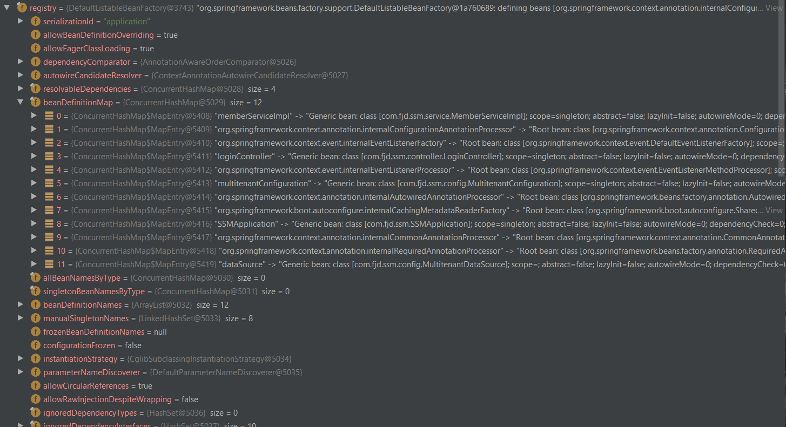
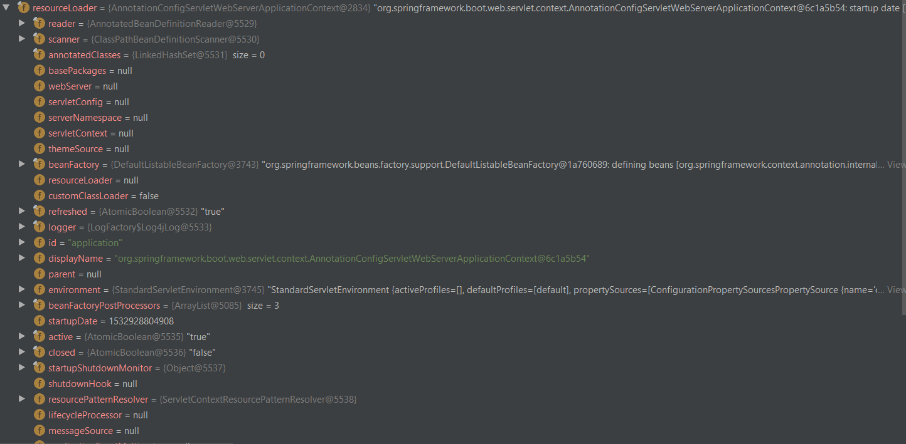
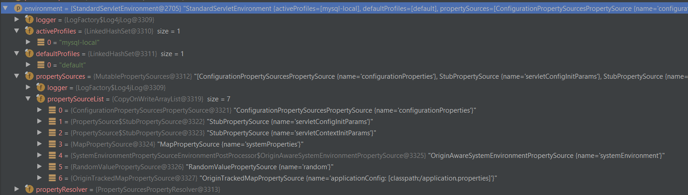
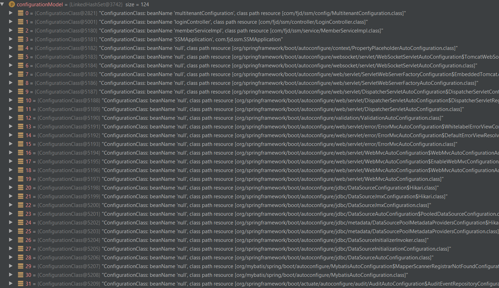

Spring 源码阅读
以https://github.com/fanjingdan012/ssm/tree/multi-tenant为例，看源码一定要配合数据看，否则容易迷失在代码里
调用顺序
1 | st=>start: Start|past:>https://github.com/fanjingdan012/ssm/tree/multi-tenant[blank] |
ConfigurationClassBeanDefinitionReader的数据
成员变量
- BeanDefinitionRegistry registry;

是DefaultListableBeanFactory，里面还维护了一个beanDefinitionMap，包含了SSMApplication（程序入口）,Controller,Configuration,Service,DataSource,还有Spring自己的一些Processor等，其中自己注册的都是Generic bean，而Spring自己的都是Root bean - ResourceLoader resourceLoader;

是AnnotationConfigServletWebServerApplicationContext - Environment environment

是StandardServletEnvironment，里面指定了activeProfiles，defaultProfiles，都是LinkedHashSet（非线程安全）的，里面还有个propertySources不知道是干什么的方法
- 在
loadBeanDefinitions(Set<ConfigurationClass> configurationModel)里传进去的参数里已经有124个·ConfigurationClass了

有自己定义的Service，Controller，SSMApplication，Configuration，还有Spring的一系列Configuration，大多数在autoconfigure包里，包括servlet层的一些Dispatcher，出错处理等，还有jdbc的一系列配置，最后还有Mybatis的MybatisAutoConfiguration，还有很细节的一些json处理等等之类的Configuration。有空应该去看看这些源代码是干了什么。代码
ConfigurationClassBeanDefinitionReader.java对刚才的124个ConfigurationClass逐个load1
2
3
4
5
6public void loadBeanDefinitions(Set<ConfigurationClass> configurationModel) {
TrackedConditionEvaluator trackedConditionEvaluator = new TrackedConditionEvaluator();
for (ConfigurationClass configClass : configurationModel) {
loadBeanDefinitionsForConfigurationClass(configClass, trackedConditionEvaluator);
}
}
loadBeanDefinitionsForConfigurationClass是要干什么事呢？ 处理了Import的loadBeanDefinitions，调用了register的registerBeanDefinitions方法ConfigurationClassBeanDefinitionReader.java1
2
3
4
5
6
7
8
9
10
11
12
13
14
15
16
17
18
19
20
21private void loadBeanDefinitionsForConfigurationClass(ConfigurationClass configClass,
TrackedConditionEvaluator trackedConditionEvaluator) {
if (trackedConditionEvaluator.shouldSkip(configClass)) {
String beanName = configClass.getBeanName();
if (StringUtils.hasLength(beanName) && this.registry.containsBeanDefinition(beanName)) {
this.registry.removeBeanDefinition(beanName);
}
this.importRegistry.removeImportingClass(configClass.getMetadata().getClassName());
return;
}
if (configClass.isImported()) {
registerBeanDefinitionForImportedConfigurationClass(configClass);
}
for (BeanMethod beanMethod : configClass.getBeanMethods()) {
loadBeanDefinitionsForBeanMethod(beanMethod);
}
loadBeanDefinitionsFromImportedResources(configClass.getImportedResources());
loadBeanDefinitionsFromRegistrars(configClass.getImportBeanDefinitionRegistrars());
}
registerBeanDefinitions方法最主要就是call DefaultListableBeanFactory的 registerBeanDefinition方法。 这个registerBeanDefinition其实就是维护DefaultListableBeanFactory的成员变量：
- beanDefinitionMap
- beanDefinitionNames
- manualSingletonNames
这些Map基本上都用了ConcurrentHashMap，保证线程安全，也保证有一定的performance。
对已有的bean做更新（Override），或者add，或者removeDefaultListableBeanFactory.java1
2
3
4
5
6
7
8
9
10
11
12
13
14
15
16
17
18
19
20
21
22
23
24
25
26
27
28
29
30
31
32
33
34
35
36
37
38
39
40
41
42
43
44
45
46
47
48
49
50
51
52
53
54
55
56
57
58
59
60
61
62
63
64
65
66
67
68
69
70
71
72
73
74
75
76
77
78
79
public void registerBeanDefinition(String beanName, BeanDefinition beanDefinition)
throws BeanDefinitionStoreException {
Assert.hasText(beanName, "Bean name must not be empty");
Assert.notNull(beanDefinition, "BeanDefinition must not be null");
if (beanDefinition instanceof AbstractBeanDefinition) {
try {
((AbstractBeanDefinition) beanDefinition).validate();
}
catch (BeanDefinitionValidationException ex) {
throw new BeanDefinitionStoreException(beanDefinition.getResourceDescription(), beanName,
"Validation of bean definition failed", ex);
}
}
BeanDefinition oldBeanDefinition;
oldBeanDefinition = this.beanDefinitionMap.get(beanName);
if (oldBeanDefinition != null) {
if (!isAllowBeanDefinitionOverriding()) {
throw new BeanDefinitionStoreException(beanDefinition.getResourceDescription(), beanName,
"Cannot register bean definition [" + beanDefinition + "] for bean '" + beanName +
"': There is already [" + oldBeanDefinition + "] bound.");
}
else if (oldBeanDefinition.getRole() < beanDefinition.getRole()) {
// e.g. was ROLE_APPLICATION, now overriding with ROLE_SUPPORT or ROLE_INFRASTRUCTURE
if (this.logger.isWarnEnabled()) {
this.logger.warn("Overriding user-defined bean definition for bean '" + beanName +
"' with a framework-generated bean definition: replacing [" +
oldBeanDefinition + "] with [" + beanDefinition + "]");
}
}
else if (!beanDefinition.equals(oldBeanDefinition)) {
if (this.logger.isInfoEnabled()) {
this.logger.info("Overriding bean definition for bean '" + beanName +
"' with a different definition: replacing [" + oldBeanDefinition +
"] with [" + beanDefinition + "]");
}
}
else {
if (this.logger.isDebugEnabled()) {
this.logger.debug("Overriding bean definition for bean '" + beanName +
"' with an equivalent definition: replacing [" + oldBeanDefinition +
"] with [" + beanDefinition + "]");
}
}
this.beanDefinitionMap.put(beanName, beanDefinition);
}
else {
if (hasBeanCreationStarted()) {
// Cannot modify startup-time collection elements anymore (for stable iteration)
synchronized (this.beanDefinitionMap) {
this.beanDefinitionMap.put(beanName, beanDefinition);
List<String> updatedDefinitions = new ArrayList<>(this.beanDefinitionNames.size() + 1);
updatedDefinitions.addAll(this.beanDefinitionNames);
updatedDefinitions.add(beanName);
this.beanDefinitionNames = updatedDefinitions;
if (this.manualSingletonNames.contains(beanName)) {
Set<String> updatedSingletons = new LinkedHashSet<>(this.manualSingletonNames);
updatedSingletons.remove(beanName);
this.manualSingletonNames = updatedSingletons;
}
}
}
else {
// Still in startup registration phase
this.beanDefinitionMap.put(beanName, beanDefinition);
this.beanDefinitionNames.add(beanName);
this.manualSingletonNames.remove(beanName);
}
this.frozenBeanDefinitionNames = null;
}
if (oldBeanDefinition != null || containsSingleton(beanName)) {
resetBeanDefinition(beanName);
}
}